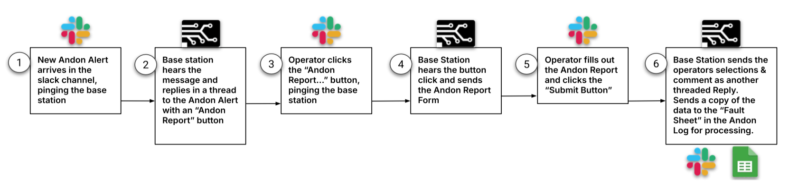

← Back to Home
Automated Andon Fault Reporting System

Overview
Designed and deployed an automated fault reporting system that transformed
manufacturing Andon alerts into structured, actionable data for analysis and reporting.
System Architecture
- Slack Bolt / Slack SDK-based backend server
- Listener service monitoring factory Andon Slack channels
- Automated fault reporting UI delivered via Slack interactive buttons
- Google Sheets integration using Google Cloud APIs
Key Contributions
- Built Slack-based reporting workflows for fault capture
- Automated structured data storage into Google Sheets
- Generated Pareto charts for recurring manufacturing issues
- Improved visibility into production bottlenecks and failure modes
Impact
Introduced analytics and visibility that did not previously exist,
enabling data-driven process improvements across manufacturing teams.